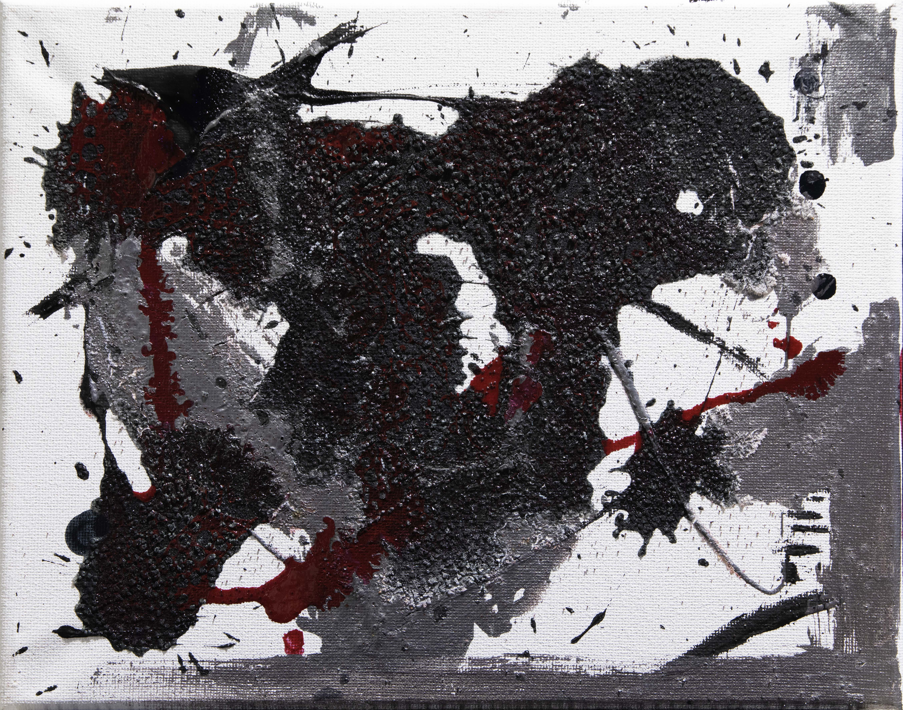

Jester (fluid) — 8 × 10”
An exploration in nontraditional canvas paint, ink, and dyes through action painting techniques and psychic automatism.
Enamel and acrylic paints, block printing ink, and powdered color fiber dye on cotton duck canvas.
Photographed with Canon 5D Mark IV, 70–200mm.